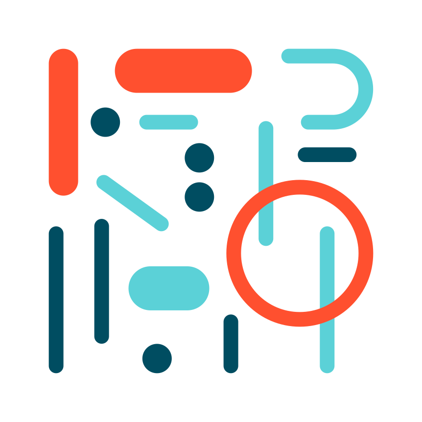
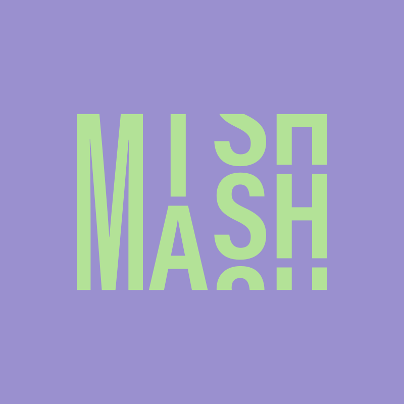


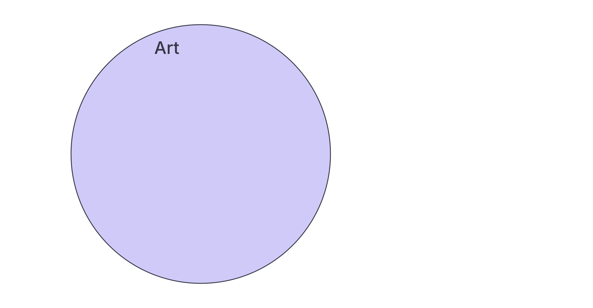
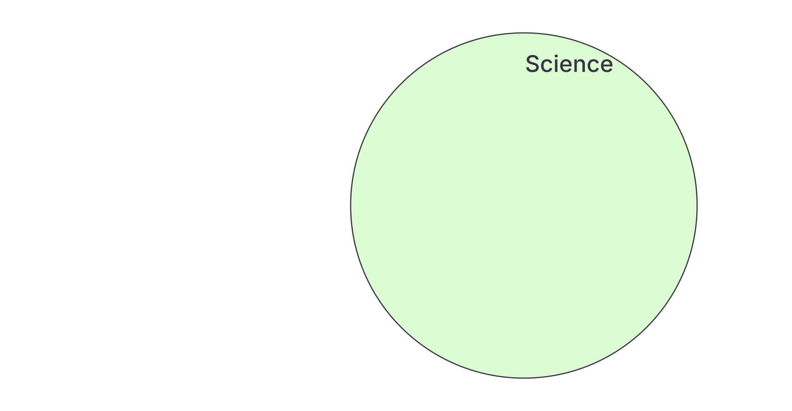
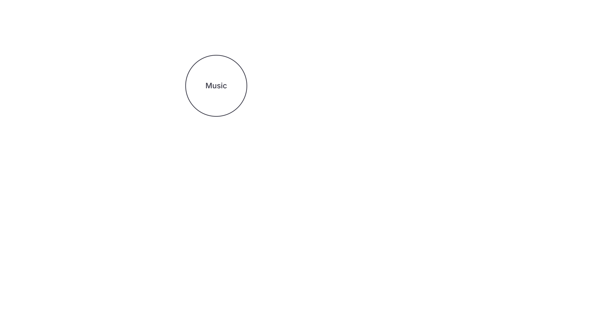
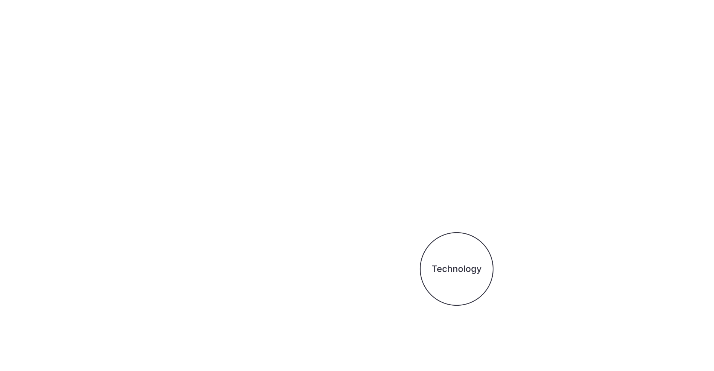
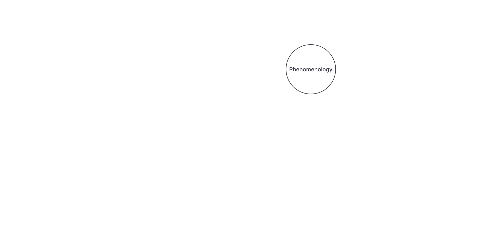
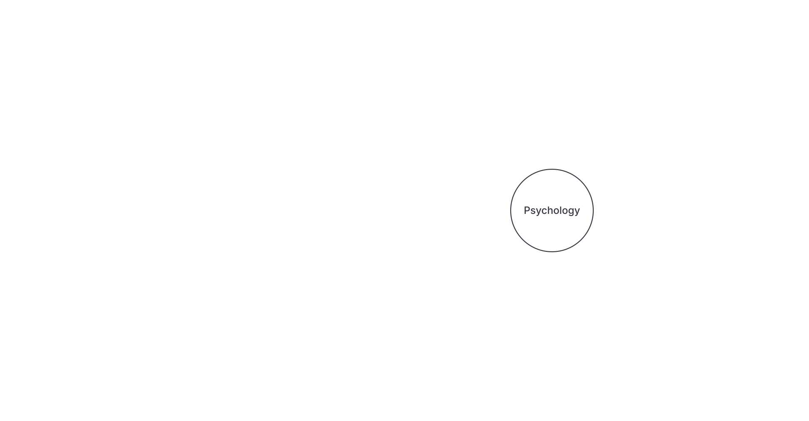
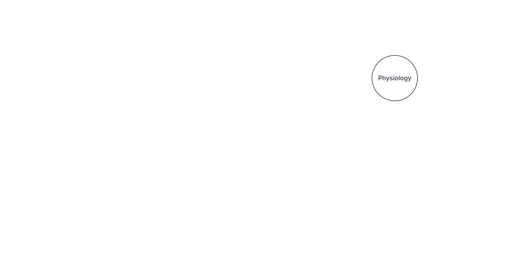
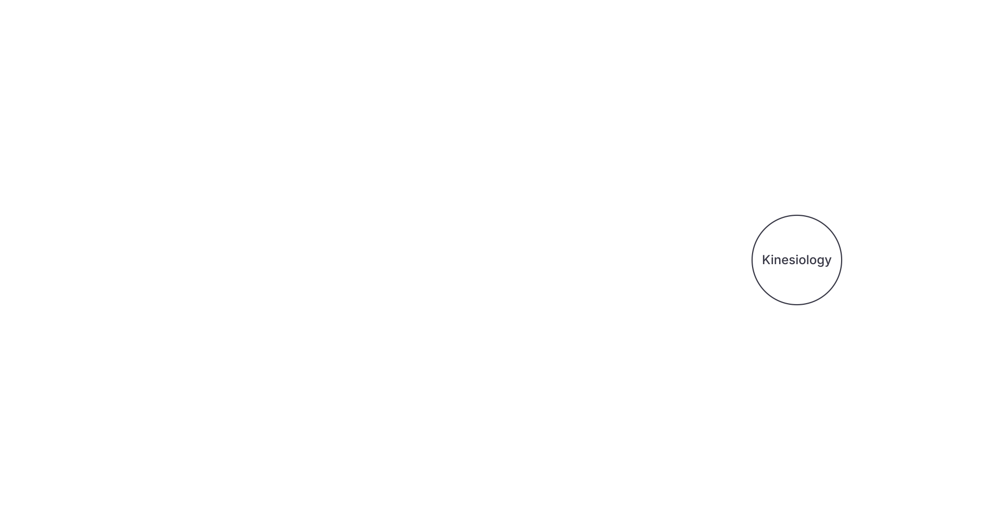
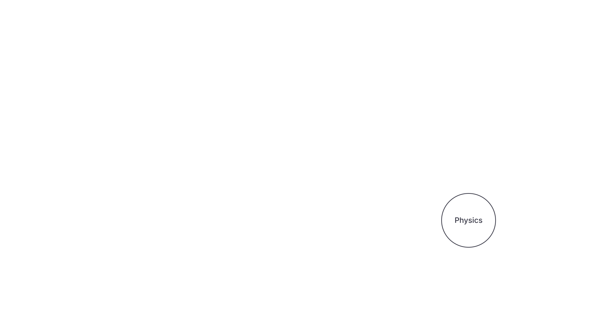
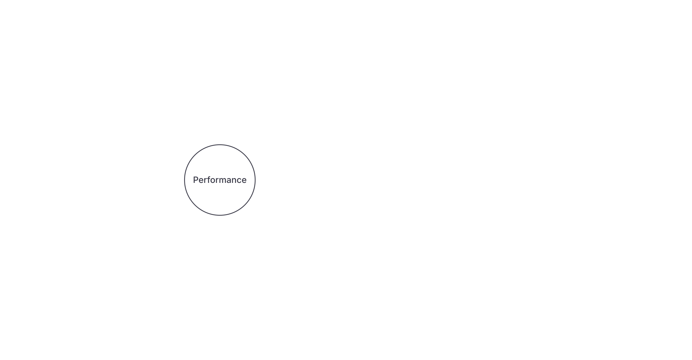
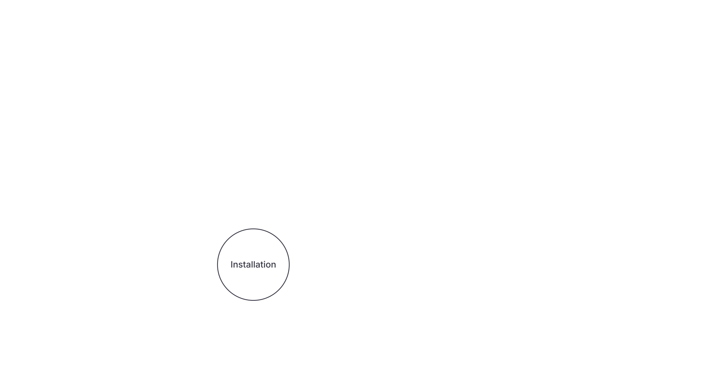
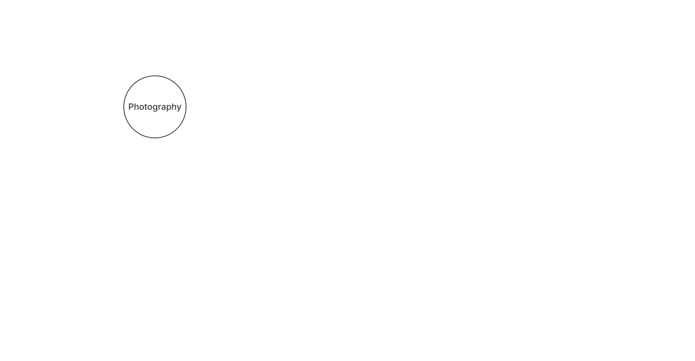
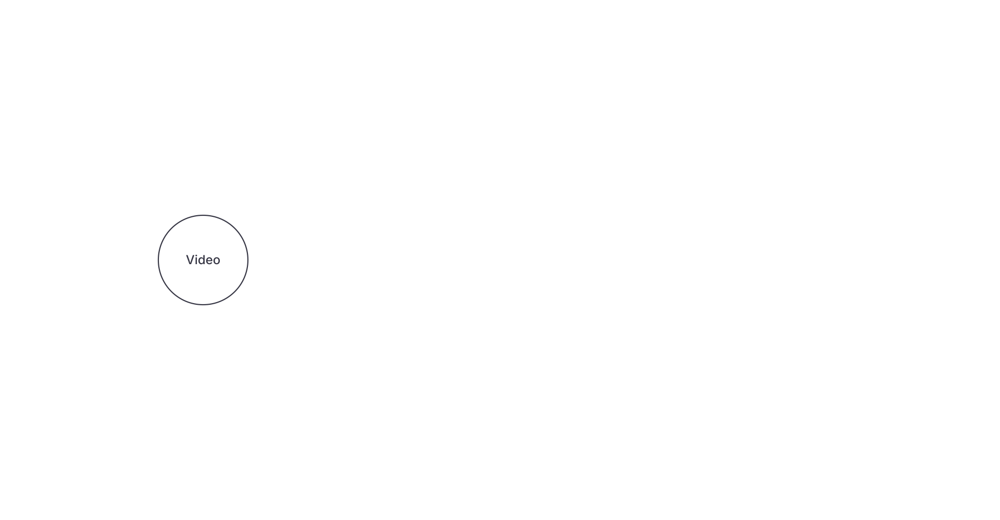
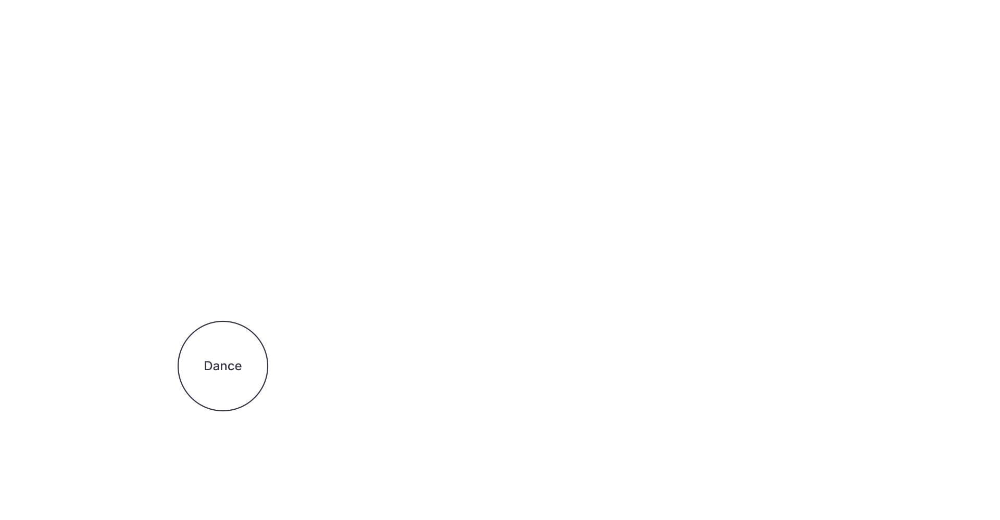
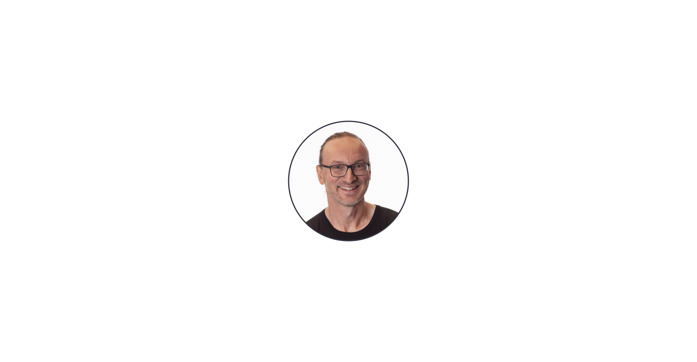
Where I speak from
Professor of music technology, University of Oslo
fourMs Lab, since 2004

RITMO Centre of Excellence, 2017–2027
MishMash Centre for AI and Creativity, from 2025
researcher
musician
director
open research
Map of the talk
rhythm
psychology
musicology
informatics
Why live concerts?
From stage to lab
?
| concerts | rehearsals | motion | physiology | eye tracking | brain | audience | audio–video |  thermal thermal | questionnaires + interviews | |
|---|---|---|---|---|---|---|---|---|---|---|
| Lydo 2023 Stavanger | ● | ● | ● | ● | ● | ● | ||||
| Lydo 2024 Stavanger | ● | ● | ● | ● | ● | ● | ● | |||
| Abels KORK 2024 Norwegian Radio Orchestra | ● | ● | ● | ● | ● | ● | ||||
| New Year's 2025 Stavanger | ● | ● | ||||||||
| Feel the Music 2025 Aarhus | ● | ● | ● | ● |
Live
Listening to a brain, or a face?
A headband with four EEG electrodes, turned into sound.
Does 120 BPM move a still body?


Go where the music is
Some things only happen on a real stage.
Art comes first
The concert goes on, so plan to fail in public.
Measure everyone
Performers and audiences, bodies and words.
Shape as well as study
The same devices make music and measure it.

Laura Bishop
Finn Upham
Sara D'Amario
Simon Høffding
Solveig Sørbø
Jonna Vuoskoski
Nanette Nielsen
Kayla Burnim
Dana Swarbrick
Anne Danielsen
Bruno Laeng
Olivier Lartillot
Tejaswinee Kelkar
Victor Gonzalez Sanchez
Agata Zelechowska
Çağrı Erdem
Qichao Lan
Bilge Serdar Göksülük
Maham Riaz
Remy Martin
Niels Chr. Hansen
Janeen Loehr
Andreas Løve
Steffen Fagerland
Hugh Alexander von Arnim
Anna-Maria Christodoulou
Abbigail Fleckenstein
Kjell Andreas Oddekalv
Charles Martin
Mari Romarheim Haugen
Victoria Johnson
Kari Anne Bjerkestrand
Alena Clim
Dongho Kwak
Henrik Herrebrøden
Marit Furunes
Rahul Omprakash Agrawal
Pedro Lucas
Atilla Vrasdonk
Eirik Slinning Karlsen
Thea Sørli Paulsrud
Wenbo Yi
Eigil Lippert
Sebastian Wallot
Fernando Rosas
Andreas Roepstorff
Kristian Martiny
Carlos Cancino-Chacón
Live Håndlykken Kvale
Mathew Good
Rebecca J. F. Bergstrøm
Halvor Kongshavn
Sophie Charlotte Barth
Dag Backer
Kyrre Traavik Låberg
Dan Michael Olsen Heggø
Christina Eide
Jonas Øren
Paul Sætrang
Mirna Porobic
Joni Wing-Yan Mok
Audun Bjerknes
Siri Jønnum
Thea Dahlborg

Claude
Cursor
GitHub Copilot
Gemini